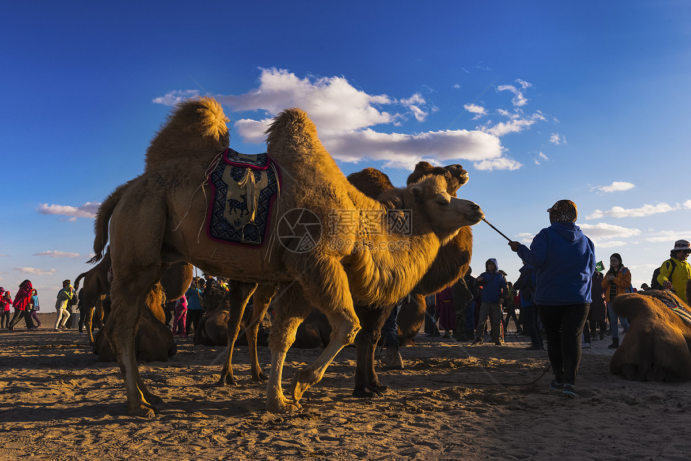
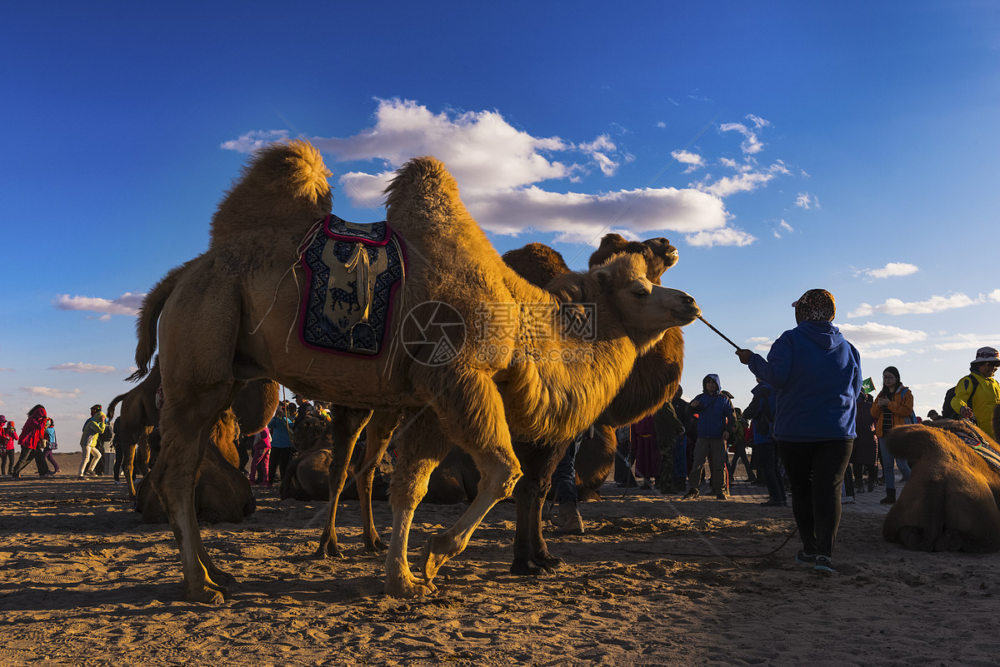

关注我 么么哒

骆驼祥子
- 学无止境
- 时间：2018-11-17
- 4567人已阅读
祥子十八岁，身材高大，年轻力壮的洋车夫。为全书灵魂人物。祥子是个个性格鲜明的普通车夫，在他身上具有劳动人民许多优良的品质。他善良纯朴，热爱劳动，对生活具有骆驼一般的积极性和坚韧的精神，但他也不讲理，满嘴谎话，好占便宜，还出卖人命。平常好像能忍受一切委屈，但在他的性格中也蕴藏有反抗的要求。他一贯要强和奋斗，不安于卑贱的社会地位。但祥子被旧社会摧残压迫，他的愿望一次又一次地被这个黑暗的社会所打破。祥子的悲惨生活深深揭露了旧中国的黑暗，反映了当时军阀混战、黑暗统治下的北京底层贫苦市民生活于痛苦深渊中的图景。
祥子的手哆嗦得更厉害了，揣起保单，拉起车，几乎要哭出来。拉到个僻静地方，细细端详自己的车，在漆板上试着照照自己的脸！越看越可爱，就是那不尽合自己的理想的地方也都可以原谅了，因为已经是自己的车了。把车看得似乎暂时可以休息会儿了，他坐在了水簸箕的新脚垫儿上，看着车把上的发亮的黄铜喇叭。他忽然想起来，今年是二十二岁。因为父母死得早，他忘了生日是在哪一天。自从到城里来，他没过一次生日。好吧，今天买上了新车，就算是生日吧，人的也是车的，好记，而且车既是自己的心血，简直没什么不可以把人与车算在一块的地方。

自从有了这辆车，他的生活过得越来越起劲了。拉包月也好，拉散座也好，他天天用不着为“车份儿”着急，拉多少钱全是自己的。心里舒服，对人就更和气，买卖也就更顺心。拉了半年，他的希望更大了：照这样下去，干上二年，至多二年，他就又可以买辆车，一辆，两辆……他也可以开车厂子了！
太阳西斜了，河上的老柳歪歪着，梢头挂着点金光。河水没有多少水，可是长着不少的绿藻，像一条油腻的长绿的带子，窄长，深绿，发出微腥的潮味。
风吹弯了路旁的树木，撕碎了店户的布幌，揭净了墙上的报单，遮昏了太阳，唱着，叫着，吼着，回荡着；忽然直弛，像惊狂了的大精灵，扯天扯地的疾走；忽然慌乱，四面八方的乱卷，像不知怎好而决定乱撞的恶魔；忽然横扫，乘其不备的袭击着地上的一切，扭折了树枝，吹掀了屋瓦，撞断了电线；可是，祥子在那里看着；他刚从风里出来，风并没能把他怎样了！
雨下给富人，也下给穷人；下给义人，也下给不义的人。其实雨并不公道，因为落在一个没有公道的世界上。
夜深了，多日的疲乏，与逃走的惊惧，使他身心全不舒服。

自从有了这辆车，他的生活过得越来越起劲了。拉包月也好，拉散座也好，他天天用不着为“车份儿”着急，拉多少钱全是自己的。心里舒服，对人就更和气，买卖也就更顺心。拉了半年，他的希望更大了：照这样下去，干上二年，至多二年，他就又可以买辆车，一辆，两辆……他也可以开车厂子了！
太阳西斜了，河上的老柳歪歪着，梢头挂着点金光。河水没有多少水，可是长着不少的绿藻，像一条油腻的长绿的带子，窄长，深绿，发出微腥的潮味。
风吹弯了路旁的树木，撕碎了店户的布幌，揭净了墙上的报单，遮昏了太阳，唱着，叫着，吼着，回荡着；忽然直弛，像惊狂了的大精灵，扯天扯地的疾走；忽然慌乱，四面八方的乱卷，像不知怎好而决定乱撞的恶魔；忽然横扫，乘其不备的袭击着地上的一切，扭折了树枝，吹掀了屋瓦，撞断了电线；可是，祥子在那里看着；他刚从风里出来，风并没能把他怎样了！
雨下给富人，也下给穷人；下给义人，也下给不义的人。其实雨并不公道，因为落在一个没有公道的世界上。
夜深了，多日的疲乏，与逃走的惊惧，使他身心全不舒服。
上一篇： 作为一个设计师,如果遭到质疑你是否能恪守自己的原则?
下一篇： 返回列表